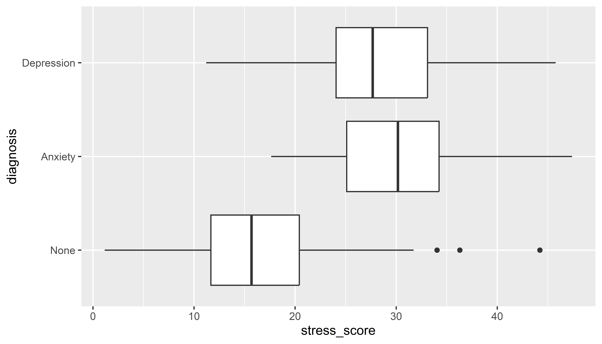

| diagnosis | clinic | stress_score | sleep_hours | activity_score | BMI | sex | year |
|---|---|---|---|---|---|---|---|
| Anxiety | South | 26.400428 | 6.813229 | 55.83022 | 26.62936 | Female | 2020 |
| None | South | 28.999814 | 7.410025 | 71.15532 | 23.38990 | Female | 2019 |
| Depression | North | 29.961343 | 6.070516 | 43.24825 | 25.01448 | Female | 2019 |
| None | South | 17.372159 | 6.148900 | 61.29423 | 28.91811 | Female | 2018 |
| None | North | 19.681761 | 6.977383 | 69.48282 | 16.25393 | Female | 2019 |
| Anxiety | North | 26.030951 | 6.250809 | 64.08448 | 28.51466 | Female | 2020 |
| Depression | South | 23.664896 | 4.004201 | 32.50274 | 25.13293 | Male | 2019 |
| None | East | 3.614131 | 6.460045 | 66.78394 | 24.96954 | Male | 2020 |
| Depression | North | 21.485539 | 4.982020 | 28.52229 | 24.63801 | Male | 2018 |
| Depression | East | 34.049383 | 4.867825 | 43.54352 | 24.21841 | Female | 2019 |
Week 3 Seminar: Distributions
From last time
Using grammar of graphics:
- mapping data variables to axes, shapes (bars, points, etc)
- controlling attributes such as color, coordinate ranges
- customising appearance
- faceting
Today
Tidyverse overview
Graphing distributions: techniques and considerations
- histograms
- density plots
- boxplots
- violin plots
- ridgeline plots
Today’s data
Data types
Categorical
diagnosisclinicsex
Continuous
stress_scoresleep_hoursactivity_scoreBMIyear
Today
Tidyverse overview
Graphing distributions: techniques and considerations
- histograms
- density plots
- boxplots
- violin plots
- ridgeline plots
What’s the tidyverse?
A set of packages for wrangling, visualising and analysing data
Similar approaches, code structure, data structure
Data wrangling:
dplyr, stringr, tidyr, readr, forcats
Data wrangling approach
note the “pipe”
Useful functions: count
count number of times each value of a variable occurs
Useful functions: filter
filter rows that match a certain condition
Useful functions: filter
filter rows that match a certain condition
Useful functions: filter
filter rows that match a certain condition
Useful functions: filter
filter rows that match a certain condition
Useful functions: filter
filter rows that match a certain condition
Useful functions: mutate
generate additional variables
psych_df %>%
mutate(activity_BMI = activity_score / BMI) %>%
select(diagnosis, activity_score, BMI, activity_BMI)# A tibble: 300 × 4
diagnosis activity_score BMI activity_BMI
<fct> <dbl> <dbl> <dbl>
1 Anxiety 55.8 26.6 2.10
2 None 71.2 23.4 3.04
3 Depression 43.2 25.0 1.73
4 None 61.3 28.9 2.12
5 None 69.5 16.3 4.27
6 Anxiety 64.1 28.5 2.25
7 Depression 32.5 25.1 1.29
8 None 66.8 25.0 2.67
9 Depression 28.5 24.6 1.16
10 Depression 43.5 24.2 1.80
# ℹ 290 more rowsUseful functions: mutate
generate additional variables
psych_df %>%
mutate(activity_BMI = activity_score / BMI,
activity_sleep = activity_score / sleep_hours)%>%
select(diagnosis, activity_score, BMI, activity_BMI, activity_sleep)# A tibble: 300 × 5
diagnosis activity_score BMI activity_BMI activity_sleep
<fct> <dbl> <dbl> <dbl> <dbl>
1 Anxiety 55.8 26.6 2.10 8.19
2 None 71.2 23.4 3.04 9.60
3 Depression 43.2 25.0 1.73 7.12
4 None 61.3 28.9 2.12 9.97
5 None 69.5 16.3 4.27 9.96
6 Anxiety 64.1 28.5 2.25 10.3
7 Depression 32.5 25.1 1.29 8.12
8 None 66.8 25.0 2.67 10.3
9 Depression 28.5 24.6 1.16 5.73
10 Depression 43.5 24.2 1.80 8.95
# ℹ 290 more rowsUseful functions: group_by + mutate
generate additional variables by group
psych_df %>%
group_by(diagnosis) %>%
mutate(stress_diagnosis = mean(stress_score)) %>%
select(diagnosis, stress_score, stress_diagnosis)# A tibble: 300 × 3
# Groups: diagnosis [3]
diagnosis stress_score stress_diagnosis
<fct> <dbl> <dbl>
1 Anxiety 26.4 30.4
2 None 29.0 16.5
3 Depression 30.0 28.3
4 None 17.4 16.5
5 None 19.7 16.5
6 Anxiety 26.0 30.4
7 Depression 23.7 28.3
8 None 3.61 16.5
9 Depression 21.5 28.3
10 Depression 34.0 28.3
# ℹ 290 more rowsUseful functions: group_by + mutate
generate additional variables by group
psych_df %>%
group_by(diagnosis, clinic) %>%
mutate(stress_diagnosis = mean(stress_score))%>%
select(diagnosis, clinic, stress_score, stress_diagnosis)# A tibble: 300 × 4
# Groups: diagnosis, clinic [9]
diagnosis clinic stress_score stress_diagnosis
<fct> <chr> <dbl> <dbl>
1 Anxiety South 26.4 30.7
2 None South 29.0 17.3
3 Depression North 30.0 28.0
4 None South 17.4 17.3
5 None North 19.7 16.5
6 Anxiety North 26.0 29.2
7 Depression South 23.7 27.7
8 None East 3.61 15.7
9 Depression North 21.5 28.0
10 Depression East 34.0 29.1
# ℹ 290 more rowsUseful functions: ifelse
generate additional variables by group
psych_df %>%
group_by(diagnosis) %>%
mutate(stress_diagnosis = mean(stress_score),
stress_binary = ifelse(stress_score > stress_diagnosis, "high", "typical"))%>%
select(diagnosis, stress_score, stress_diagnosis, stress_binary)# A tibble: 300 × 4
# Groups: diagnosis [3]
diagnosis stress_score stress_diagnosis stress_binary
<fct> <dbl> <dbl> <chr>
1 Anxiety 26.4 30.4 typical
2 None 29.0 16.5 high
3 Depression 30.0 28.3 high
4 None 17.4 16.5 high
5 None 19.7 16.5 high
6 Anxiety 26.0 30.4 typical
7 Depression 23.7 28.3 typical
8 None 3.61 16.5 typical
9 Depression 21.5 28.3 typical
10 Depression 34.0 28.3 high
# ℹ 290 more rowsUseful functions: group_by + summarise
calculating summaries for groups
Other useful data wrangling functions
select() is like filter() but for variables (columns) instead of observations (rows)
arrange() sorts data
rename() does exactly what you think
left_join() (and other joins) combines datasets based on shared values in shared variables
Today
Tidyverse overview
Graphing distributions: techniques and considerations
- histograms
- density plots
- boxplots
- violin plots
- ridgeline plots
Why distributions?
Distributions show the overall shape and spread of data that single summary statistics (like the mean) can miss
Help spot skew and outliers, which inform choices of appropriate analyses
Visualizing distributions
Focus on visualizing the distribution of one variable:
stress_score
Pros/cons of different ways to visualize and compare distributions
Today’s agenda
histograms
density plots
box plots
violin plots
ridgeline plots
Today’s agenda
histograms
density plots
box plots
violin plots
ridgeline plots
1. Histograms
Visualize the distribution of a numeric variable with lots of values
Pro:
- can view the entire distribution
Con:
- need to be careful with bin width
1. Histograms

1. Histograms

1. Histograms

1. Histograms

1. Histograms

1. Histograms

1. Histograms
1. Histograms
comparing distributions

Today’s agenda
histograms
density plots
box plots
violin plots
ridgeline plots
2. Density plots
Smoothed version of the histogram
Pro:
- Focus on overall shape rather than local fluctuations
Con:
- Can be misleading with small data sets
2. Density plots

2. Density plots

2. Density plots
overlaying a histogram
2. Density plots

2. Density plots
comparing two distributions
2. Density plots

2. Density plots
2. Density plots

2. Density plots
2. Density plots

Today’s agenda
histograms
density plots
box plots
violin plots
ridgeline plots
3. Box plots
Compact depiction of:
- Median, 25/75 percentiles (quartiles)
- Potential outliers
Pro:
- Conveys key aspects of distribution in a concise way
Con:
- Can’t see full distribution, which may obscure characteristics such as multi-modality
3. Box plots
3. Box plots
3. Box plots
modifying outliers
3. Box plots

3. Box plots
marking the mean
3. Box plots

3. Box plots
adding jittered points
Conveys a sense of the distribution of data
3. Box plots

3. Box plots
adding jittered points
Conveys a sense of the distribution of data
3. Box plots

3. Box plots
suppressing outliers
3. Box plots

Today’s agenda
histograms
density plots
box plots
violin plots
ridgeline plots
4. Violin plots
Similar to a boxplot, but less compact: shows the actual distribution, similar to a density plot
Useful when you have a lot of data and want to see the shape of the distribution rather than look at all the individual points
4. Violin plots
4. Violin plots
overlaying a boxplot
4. Violin plots

Today’s agenda
histograms
density plots
box plots
violin plots
ridgeline plots
5. Ridgeline plots
Like violin plots, depict distributions of a variable for multiple groups
Distributions are depicted as densities or histograms rather than violins
Requires the ggridges package
An extension of ggplot2 that uses the same syntax
5. Ridgeline plots
5. Ridgeline plots

5. Ridgeline plots
5. Ridgeline plots

5. Ridgeline plots
ordering by mean
5. Ridgeline plots

5. Ridgeline plots
adding jittered points
5. Ridgeline plots

5. Ridgeline plots
adding a rug plot
psych_df %>%
group_by(diagnosis) %>%
mutate(diagnosis = fct_reorder(diagnosis, stress_score, .fun = mean, .desc = TRUE))%>%
ggplot(aes(x = stress_score, y = diagnosis)) +
geom_density_ridges(jittered_points = TRUE,
position = position_points_jitter(width = 0.05, height = 0),
point_shape = '|', point_size = 3, point_alpha = 1, #<<
alpha = 0.7)5. Ridgeline plots

5. Ridgeline plots
adding a raincloud plot
5. Ridgeline plots

Summary: Distributions
What you’re showing:
- Shape (range, skew, modality)
- Centre (median/mean)
- Spread (e.g., interquartile range)
- Outliers
Summary: Distributions
Pick the display
Histogram – whole shape, aggregated in bins
Density – smooth shape
Boxplot – compact summary (median, quartiles)
Violin – smooth shapes for groups, can add points
Ridgeline – smooth shapes for groups
Upcoming
Next week, bar plots
We will look at how continuous variables like the ones we visualized today differ across categorical groups